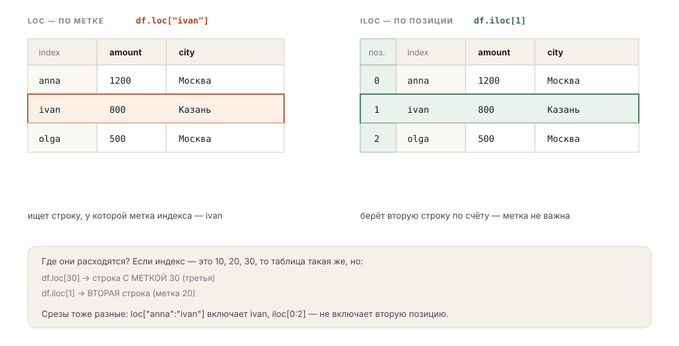

loc и iloc: имя против номера Самый частый источник ошибок в pandas — и самый простой, если понять правило
loc ищет по подписи — как человека по фамилии в списке.
iloc ищет по позиции — как вагон по номеру в составе. Перепутать их легко,
потому что для таблицы с индексом 0, 1, 2 они совпадают. До первой сортировки.
Словарь главы — если забыли термины
- loc
- Выбор по метке индекса и имени колонки; правая граница среза включается.
- iloc
- Выбор по номеру позиции; правая граница среза не включается.
- at / iat
- Доступ к одному значению по метке / по позиции, без Series.
- дубли индекса
- Одинаковые метки строк: loc вернёт несколько строк, а не одну.
01Зачем это backend-разработчику
- Выборка — основная операция. «Взять колонку», «найти строку», «отфильтровать по условию» — без этого не обходится ни один отчёт.
- Запись данных. Только явный
.locнадёжно меняет таблицу; цепочки индексации — нет. - Прямой мост в SQL.
locпо метке — это поиск по ключу, маска — этоWHERE,ilocс позицией — этоLIMIT/OFFSET. - Собеседование: «чем loc отличается от iloc», «включает ли срез границу», «почему
df[0]падает» — классика.
02Ассоциация-якорь: фамилия и номерок
loc — это «найти по фамилии в списке гостей». Вы не знаете, каким по счёту идёт человек; вы знаете его подпись в списке.
iloc — это «взять третьего по списку». Подпись не важна: важен порядок. Отсюда и разница в срезах: список гостей «с Ивана по Ольгу» включает обоих, а «первые два» — только два.
03Ассоциативный ряд: восемь звеньев
- df["col"]одна колонка — Series
- loc[метка]строка по подписи индекса
- loc[строка, колонка]одна ячейка или срез
- loc[срез]граница включается
- loc[маска]фильтр по условию
- iloc[позиция]по счёту, не по метке
- iloc[срез]граница не включается
- at / iatодно значение без Series
04Схема: одна таблица, два способа найти строку

05Как это устроено на самом деле
Под капотом у DataFrame — набор колонок и объект-индекс. loc просит индекс
найти метки (для строковых меток это хеш-таблица, для RangeIndex — арифметика),
а iloc просто отсчитывает позиции. Поэтому при смене порядка строк метка
остаётся надёжной, а номер — нет.
| Запись | Что выбирает | Границы среза |
|---|---|---|
| df.loc["ivan"] | строку с меткой ivan | — |
| df.iloc[1] | вторую строку по порядку | — |
| df.loc["anna":"ivan"] | строки по меткам | обе включены |
| df.iloc[0:2] | строки по позициям | правая не включена |
| df.loc[mask, "amount"] | строки по маске + колонку amount | — |
| df.at["ivan", "amount"] | одно значение | — |
Почему срезы разные
Это не случайность: метки — это имена, и «от anna до ivan» естественно включает обоих. Позиции —
это счёт, и в Python срез 0:2 традиционно не включает правую границу.
pandas сохранил оба соглашения.
Зачем at и iat
Для доступа к одному значению .at и .iat быстрее,
потому что не создают промежуточный Series. И, что важнее для новичка, они явно говорят:
«здесь ровно одна ячейка».
Дубли индекса
Если метка встречается дважды, loc вернёт все строки с этой меткой —
DataFrame, а не Series. Это не ошибка, но неожиданный тип результата.
06Лаборатория: запустить и увидеть
Фрагменты файла из папки guide/snippets: 13_loc_iloc_lab.py.
Шаг 1. loc и iloc на одной таблице
df = pd.DataFrame(
{"amount": [1200, 800, 500], "city": ["Москва", "Казань", "Москва"]},
index=["anna", "ivan", "olga"],
)
print(df.loc["ivan", "amount"])
print(df.iloc[1, 0])
Шаг 2. Срезы: разная граница
print(df.loc["anna":"ivan"]) print(df.iloc[0:2])
Здесь результат совпал, но по разным причинам: loc включил обе метки,
iloc взял позиции 0 и 1. Если сдвинуть границу, разница станет видна.
Шаг 3. Строки и колонки вместе
print(df.loc[["anna", "olga"], ["amount"]]) print(df.iloc[[0, 2], [0]]) print(df.iloc[:, 1].tolist())
Шаг 4. Маска и loc
print(df.loc[df["amount"] > 600, ["city", "amount"]])
Шаг 5. at и iat
print(df.at["ivan", "amount"]) print(df.iat[1, 0])
Шаг 6. Когда метка и позиция расходятся
odd = pd.DataFrame({"v": [10, 20, 30]}, index=[10, 20, 30])
print(odd.loc[30].tolist()) # строка с меткой 30
print(odd.iloc[1].tolist()) # вторая строка
Вот и вся разница: loc нашёл строку по подписи 30, iloc
взял вторую по счёту. Если бы таблица была «нормальной» (индекс 0,1,2), оба вызова дали бы одно и то же —
поэтому ошибка и живёт незамеченной.
Шаг 7. Дубли индекса и запись
dup = pd.DataFrame({"x": [1, 2]}, index=["a", "a"])
print(dup.loc["a"]) # две строки, а не одна
df.loc["ivan", "amount"] = 850 # запись — только через loc
print(df)
07Мост: те же выборки в SQL
loc по метке — это поиск по ключу
SELECT amount FROM users WHERE id = 42; -- что-то вроде df.loc[42, "amount"]
SELECT * FROM users WHERE amount > 600; -- df.loc[df["amount"] > 600]
SELECT * FROM users ORDER BY amount DESC LIMIT 2; -- df.sort_values("amount", ascending=False).iloc[:2]
Маска — это WHERE
df.loc[df["city"] == "Москва"] # WHERE city = 'Москва'
df.loc[df["amount"] > 600, ["city"]] # SELECT city WHERE amount > 600
df.sort_values("amount", ascending=False).iloc[:2] # ORDER BY amount DESC LIMIT 2
iloc с позициями — самый близкий родственник LIMIT/OFFSET:
«взять строки с 10-й по 20-ю». В SQL это делают явно и с сортировкой, иначе порядок не гарантирован.
08Шесть ошибок, на которых спотыкаются
df.iloc["ivan"] → TypeError: позиции должны быть целыми. loc и iloc не взаимозаменяемы.
.loc, номер — .iloc.Если индекс строковый, loc[0] бросит KeyError: 0 — это не позиция.
df.index; для позиции — iloc.df.loc["anna":"ivan"] включает ivan — в отличие от iloc[0:2].
df[0] ищет колонку с именем 0, а не первую строку. Если такой колонки нет — KeyError.
.iloc, ячейка — .at.df["amount"][0] = 0 не меняет таблицу (в pandas 3 гарантированно).
df.loc[0, "amount"] = 0.df.loc["a"] при двух строках с меткой a вернёт DataFrame, а не Series — код, ожидающий Series, сломается.
df.index.is_unique; при необходимости reset_index.09Вопросы с собеседования
Чем loc отличается от iloc?
loc — по метке индекса и именам колонок, iloc — по целочисленным позициям. Срезы: loc включает правую границу, iloc — нет.
Включает ли срез loc правую границу?
Да, включает. Это соглашение о метках: «от anna до ivan» — оба гостя.
Что вернёт df.loc["anna"]?
Series с индексом-колонками и значениями строки. Если метка встречается несколько раз — DataFrame со всеми совпадениями.
Почему df[0] не выбирает первую строку?
Квадратные скобки у DataFrame — это выбор колонок по имени. df[0] ищет колонку с именем 0.
Зачем at и iat?
Для доступа к одному значению: df.at[метка, колонка] и df.iat[позиция, позиция]. Быстрее и явнее.
Как отфильтровать строки по условию?
df.loc[df["amount"] > 600] или просто df[df["amount"] > 600]. Для выбора колонок — loc[mask, ["amount"]].
Что делать с дублями индекса?
Проверить df.index.is_unique; при необходимости df.reset_index(drop=True) или агрегировать до уникальности.
Чем выборка по loc отличается от SQL WHERE?
Смысл тот же: отобрать строки по условию. Разница в том, что loc сохраняет исходный индекс, а SQL возвращает просто строки без позиций.
10Три задачи: сначала своя попытка
01 Строка по имени
В таблице с индексом-именами получите строку ivan и его зарплату через loc, затем то же через iloc.
Показать решение
df = pd.DataFrame(
{"amount": [1200, 850, 500], "city": ["Москва", "Казань", "Москва"]},
index=["anna", "ivan", "olga"],
)
df.loc["ivan", "amount"] df.iloc[1, 0]
Что важно. Работают оба, но iloc[1] сломается, если порядок строк
изменится. Метка надёжнее, позиция быстрее.
02 Фильтр и колонки
Выведите города и суммы для заказов дороже 600, используя маску и loc.
Показать решение
df.loc[df["amount"] > 600, ["city", "amount"]]
03 Найдите ошибку
Код должен поставить 0 в колонку amount у строки ivan. Что не так: df["amount"]["ivan"] = 0?
Показать решение
df["amount"] возвращает Series; присваивание в него не меняет таблицу
(CoW) и работает ненадёжно. Правильно — df.loc["ivan", "amount"] = 0.